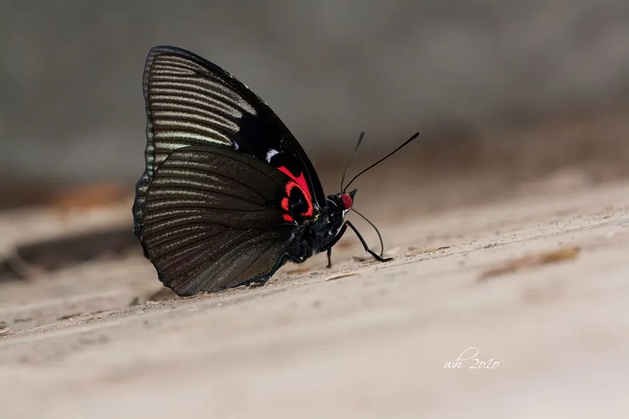

昆虫 · 动物界
黑紫蛱蝶 Sasakia funebris

翅面近全黑、仅前翅缀少量白斑的珍稀蛱蝶，中国特有种，幼虫以朴树为食，野外数量稀少。
- 分类
- 门节肢动物门纲昆虫纲目鳞翅目科蛱蝶科属紫蛱蝶属
- 栖息环境
- 中低山阔叶林、沟谷与朴树成片的林缘
- 地理分布
- 中国四川、云南、陕西、湖北、浙江等山区
- 保护级别
- 中国特有种，分布狭窄，多地视为珍稀蝶类并限制采集
物种志
黑紫蛱蝶的翅展约八至九厘米。翅面几乎全为黑褐色，仅前翅中区有数枚白色小斑，后翅臀角附近有暗红色环纹，雄蝶翅基在强光下隐约泛出深紫色光泽。雌蝶体型较大，白斑略宽，腹部粗壮。它的整体色调比同属的大紫蛱蝶暗沉得多，黑紫之名便由此而来，翅形也更显狭长。
它是中国特有种，分布于四川、云南、陕西、湖北等地的中低山阔叶林，栖息在朴树成片的林缘和沟谷。成虫在夏季出现，喜在树干上吸食树汁，飞行迅速，常停在树冠层，野外观察记录一向不多。幼虫以朴树叶片为食，以幼虫越冬，翌年春季继续取食，化蛹于叶间。由于分布区狭窄、寄主依赖性强，它在多地被视为珍稀蝶类，采集与生境破坏是主要威胁。
形态与习性
- 翅展约八至九厘米
- 翅色近全黑，强光下翅基泛深紫
- 斑纹前翅数枚小白斑，后翅臀角暗红环
- 食性幼虫取食朴树叶片
- 越冬以幼虫在落叶间越冬
- 分布中国四川、云南、陕西等山区
趣味知识
- 它是中国特有的蝴蝶，国外没有野生种群。
- 黑紫蛱蝶全身近乎墨黑，只有强光斜照时才能看见翅基的紫意。
- 它飞得又快又高，多数人只能在树冠间瞥见一道黑影。